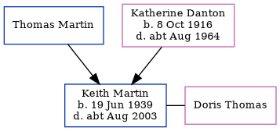

Keith John L Martin 1939 - c2003
[ Home ] | [ Calendar ] | [ Surnames Index ] | [ Errors ] | [ Family History ]The child of Thomas Martin and Katherine Danton, Keith Martin, the third cousin on the father's side of Nigel Horne, was born in East Ham, London, England on 19 Jun 19391,2. He married Doris Thomas in Exeter, Devon, England around Aug 19633.
He died c. Aug 2003 in Teignbridge, Devon, England2.
Parents
- Katherine was born on 8 Oct 1916
Citations
- England & Wales births 1837-2006 - Findmypast
- England & Wales deaths 1837-2007 - Findmypast
- England & Wales Marriages 1837-2005 - Findmypast
Media
England & Wales marriages 1837-2005 - BMD/M/1963/3/AZ/000822/040
England & Wales deaths 1837-2007 - BMD/D/2003/9/85607532
England & Wales births 1837-2006 - BMD/B/1939/3/AZ/000777/079
Family Tree
Map
Generated by ged2site. Last updated on Jul 3, 2024
Known Issues
1939 UK register information missing